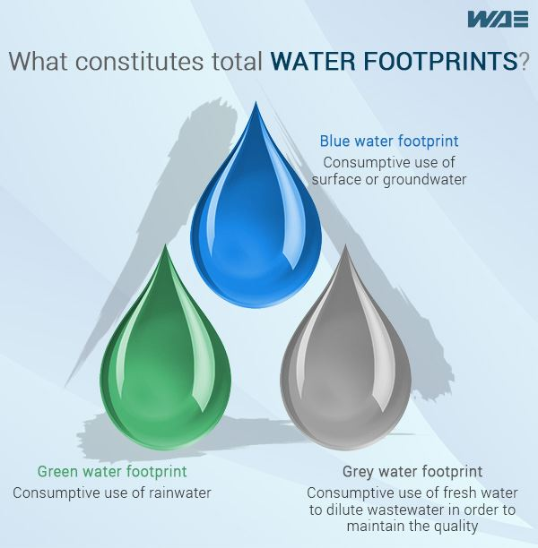

A water footprint is a measure of the total amount of water used directly and indirectly by an individual, community, business, or nation. It takes into account not only the water used for drinking, cooking, and hygiene but also the water embedded in the production of goods and services consumed.
There are three components to a water footprint:

Blue Water Footprint:
This refers to the volume of freshwater consumed from surface or groundwater sources. It includes water used for domestic purposes, agriculture, and industry.
Green Water Footprint:
This represents the volume of rainwater consumed during the production of crops and other agricultural products. It refers to the water that is stored in the soil and is used by plants.
Grey Water Footprint:
This measures the volume of freshwater required to dilute pollutants in wastewater to meet specific water quality standards. It reflects the environmental impact associated with the pollution generated by various activities.
Who Created the Concept of Water Footprints?
The concept, sources and methodology come from the Water Footprint Network (WFN). The concept was created by Dr. Arjen Hoekstra who, along with the others at the WFN, developed the framework and established the international organization as the foremost research network in the discipline.